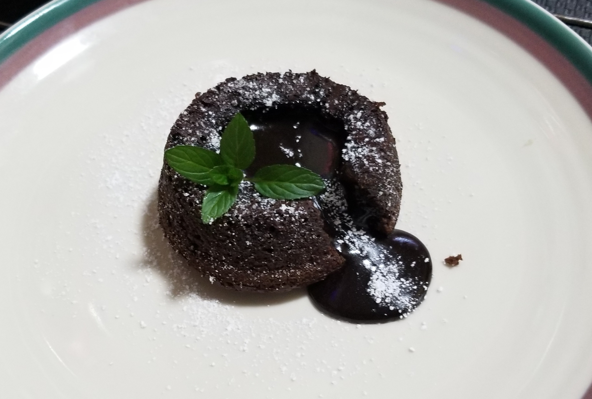

Food Suggestions
Scrambled Eggs with Ketchup

Scrambled eggs are a staple breakfast food. But adding ketchup makes it better!* It's a quick and easy dish to make if you know the basics of cooking.
Sicilian-Style Pizza

Sicilian-style pizza is a thick-crusted rectangular pizza. It looks very similar to Detroit-style pizza but Sicilian-style pizza usually has more sauce on it. From the picture itself, wouldn't you say it looks delicious?
Soup Dumplings

Soup dumplings are a type of Chinese steamed buns prepared in a small bamboo steaming basket. Inside the bun are seasoned pork filling and hot soup.
Lava Cake
(with a recipe)

If you're a chocolate lover, you must've had at least one lava cake before. They're a perfect "fancy" desserts that's not as hard to make as you would think. The only difficult part about it is the timing.
I did promise I would include a recipe here. If you've never had lava cakes, you can try it now!
Serving size: 4 ramekins
Ingredients
- Semi-sweet chocolate - 170g
- Unsalted butter - 115g
- All-purpose flour - 31g
- Sugar - 60g
- Salt - a pinch
- 2 eggs
- 2 egg yolks
- Oil
- Cocoa-powder
Steps
- Melt the chocolate and butter in a small pan
- Preheat the oven to 425°F
- Mix the sugar, flour, and salt in a bowl
- Whisk all eggs to the mixture
- Combine the sugar, salt, flour, and egg mixture with the chocolate and butter mixture
- Oil the ramekins and dust them with cocoa-powder
- Spoon the batter evenly amoung each ramekin
- Bake in the oven for 15 minutes at 425°F**